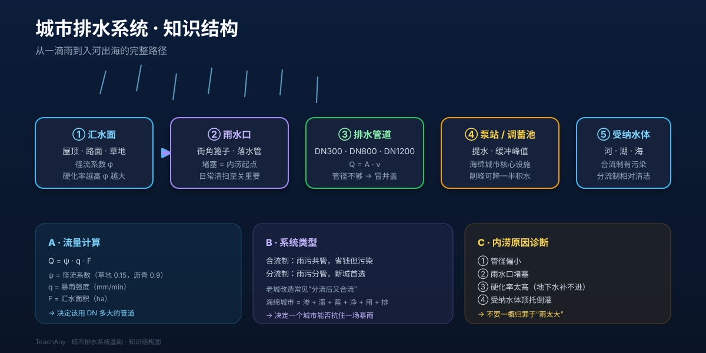

2021 年 7 月 20 日，郑州一小时下了 201.9 mm 的雨——这相当于把 1.5 个西湖倒在城市头上。为什么有些城市能扛住，有些会内涝？答案藏在你脚下的管网里。

先选一个你最关心的。后面的例子和 AI 学伴会围绕它来讲。
选择或输入后，本课会围绕你的问题展开。
Q = ψ · q · F 流量公式判断一段管道在指定雨强下是否会内涝题 1：下面哪种地面"径流系数"最大（也就是最不吸水、出水最多）？
题 2：下水道井盖突然喷水（"井盖跳舞"），最直接说明什么？
想象你是一颗刚从云里掉下来的雨滴，下面这 5 步决定了你能不能顺利"回家"。
假设你是市政工程师，要给一片新建小区设计排水。拖动下面三个滑块，看看一根 DN800（直径 0.8 米）的混凝土管够不够。
设计流量公式（雨水）： Q = ψ · q · F · K
本课件简化为 Q (m³/s) ≈ ψ × (q/60·1000) × F·10000 / 1000 = ψ × q × F / 6（q 单位 mm/min，F 单位 ha）
管道过流能力（满流近似）： Q_cap = A · v，A = π·(DN/2)²，混凝土管设计流速 v ≈ 1.6 m/s
当 Q / Q_cap > 1，管道超载，必然冒井盖；> 0.85 接近极限，城市规范一般要求留富余。
立刻练：新建小区如果只重视"雨水管粗一点"，会有什么后果？
挑一个真实场景，写下你的判断和理由（≥80 字）。完成后再看下方"参考思路"。
A · 双重问题：第一是雨水口堵塞（②），日常清扫就能见效；第二是硬化率太高（①），可改局部为透水砖、加雨水花园。管子一般不是主因，先做"小手术"。
B · 主管没问题不代表整个系统没问题。可能是支管太小、雨水口分布不均、或局部低点形成"碗底"。低洼处需局部增加雨水箅子或建小型调蓄池。
C · 大潮汛期间海平面比河面高，下游被"顶住"，上游水排不出去。建议：① 在排水入海处加防潮闸，根据潮汐预报关闸；② 配套调蓄池，闸关闭期间先把水暂存起来。
常见错误一：只记结论、不问条件——「城市排水系统基础」的结论都有适用范围，答题先问自己"这个结论在什么条件下成立"。
常见错误二：把相近概念搞混——遇到容易混淆的一对概念时，先各举一个例子，再说出区别。
做题时留意这些陷阱；遇到拿不准的，把题目发给 AI 学伴帮你诊断错因。
题 1：一片 4 ha 的小区，硬化率高（ψ=0.85），遇到 q = 2.5 mm/min 的暴雨，设计流量 Q ≈ ?
题 2：下面哪一项不是海绵城市的"六字诀"中的一个？
题 3：同样一场暴雨，为什么有的城市内涝有的不内涝？最不可能的原因是？
城市排水不是"管子粗就行"——面 → 口 → 管 → 池 → 河 五环相扣，任何一环弱就会让全城兜底。 下次再看到城市内涝新闻，先别急着说"雨太大了"，问一句：径流系数、雨水口、管径、调蓄池、受纳水体顶托，到底是哪一环出了问题？
先独立作答，再点选项查看对错与错因。
社区排水系统中，实时监测水位变化的设备属于什么组成部分？
下列哪项是排水系统物联网中最关键的通信要求？
当泵站控制系统收到多个传感器报警时，首先应该执行：
排水系统的物联网架构中，负责将传感器数据传送到云平台的组件是____。
答案：通信模块
通信模块实现终端设备与云端的数据传输
当水位超过警戒线时，控制系统通过____算法决定启动泵站的数量。
答案：决策
决策算法根据积水程度调配资源
关于排水系统数据流，正确的是：
分析某社区三天内的水位传感器数据表（提供模拟数据），找出排水瓶颈